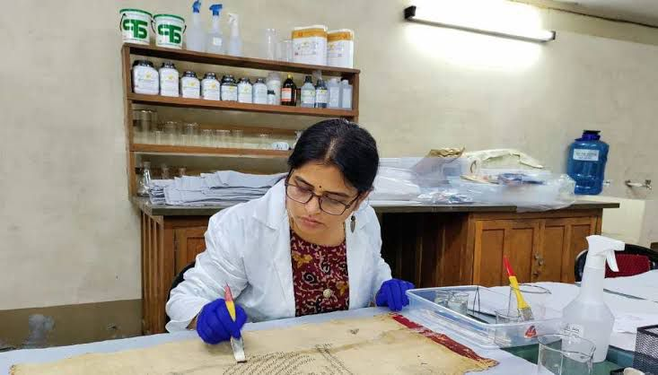

We learned how old manuscripts are preserved with special techniques to protect them from damage.BORI's preservation efforts focus on digitizing its extensive collection of over 28,000 manuscripts and 153,000 books, primarily in Sanskrit and Prakrit, to safeguard them from deterioration. This includes physical protection using muslin cloth and digital processes with scanners, with the goal of making the collections accessible via a digital library, and is supported by a grant from the Murty Trust. BORI also serves as a Manuscript Resource Centre and Manuscript Conservation Centre for Maharashtra, ensuring the preservation and continued study of India's cultural heritage
Digitization: BORI employs six scanners to digitize fragile manuscripts made of paper and palm leaf. The project is ongoing, with a goal to complete the process by 2027. Physical Protection: Manuscripts are stored in red muslin cloth, which provides a protective layer. Digital Library: Once digitized, the manuscripts and books will be available through BORI's digital library.
Back to Home